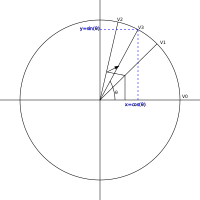

Der CORDIC-Algorithmus und die direkte digitale Synthese (DDS)
Der CORDIC-Algorithmus (Abkürzung für „Coordinate Rotation Digital Computer“) wurde 1956 von Jack.E. Volder entwickelt, um die analogen Drehmelder, die für die Navigation von Raketen verwendet wurden, durch digitale Berechnungen auf einem Digitalcomputer zu ersetzen. Der Algorithmus erwies sich als sehr erfolgreich und ist heute in jedem Taschenrechner zu finden, wo er Berechnung der trigonometrischen Funktionen Sinus, Kosinus und Tangens. Der Algorithmus ist jedoch nicht darauf beschränkt, sondern kann nach den erforderlichen Änderungen auch logarithmische und exponentielle Funktionen berechnen.
Der CORDIC-Algorithmus
In der folgenden Abbildung zeigt V0 den Startvektor
\[v_{0}=\begin{bmatrix} 0 \\ 1 \end{bmatrix} \] 
die wir nun durch Multiplikation mit der unten angegebenen Rotationsmatrix iterieren:
\[v_{i+1}= R_i v_i\]
\[ R_i = \begin{bmatrix} cos(\theta) & -sin(\theta) \\ sin(\theta) & cos(\theta) \end{bmatrix} \] Wir verwenden die folgenden zwei trigonometrischen Identitäten:
\[ cos(\theta) = \frac{1}{\sqrt{1+tan^2(\theta)}} \]
\[ sin(\theta) = \frac{tan(\theta)}{\sqrt{1+tan^2(\theta)}} \]
wird die Rotationsmatrix zu
\[ R_i = \frac{1}{\sqrt{1+tan^2(\theta)}} \begin{bmatrix} 1 & -tan(\theta) \\ tan(\theta) & 1 \end{bmatrix} \]
Dann wird der Rotationsvektor $v_{i+1}= R_i v_i$ zu:
\[ \begin{bmatrix} x_{i+1} \\ y_{i+1} \\ \end{bmatrix} = \frac{1}{\sqrt{1+tan^2(\theta)}} \begin{bmatrix} 1 & -tan(\theta) \\ tan(\theta) & 1 \end{bmatrix}\begin{bmatrix} x_{i} \\ y_{i} \\ \end{bmatrix} \]
Wir ersetzen die Tangensfunktion durch einen einfacheren Ausdruck, was zu einer Bitverschiebung führt.
\[ \begin{bmatrix} x_{i+1} \\ y_{i+1} \\ \end{bmatrix} = K_{i} \begin{bmatrix} 1 & -\sigma 2^{-i} \\ \sigma 2^{-i} & 1 \end{bmatrix}\begin{bmatrix} x_{i} \\ y_{i} \\ \end{bmatrix} \] wo
(role=„image“,„../images/vector_rotation_Ki.svg“,imgfmt=„svg“, width=„70%“] \[ K_{i} = \frac{1}{\sqrt{1+2^{-2i}}} ]
und $\sigma_i$ wird verwendet, um die Richtung der Drehung zu bestimmen. Wenn der Winkel $\theta_{i}$ positiv ist, ist $\sigma{i}$ +1, andernfalls -1.
Der Faktor Ki kann für den iterativen Prozess vollständig faktorisiert werden.
\[ K(n) = \prod_{i=0}^{n-1}K_{i} = \prod_{i=0}^{n-1} \frac{1}{\sqrt{1+2^{-2i}}} \]
\[ K = lim_{n→ \infty} K \approx 0,60725293500888 ]